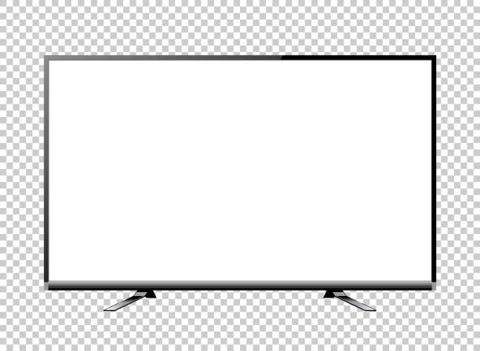
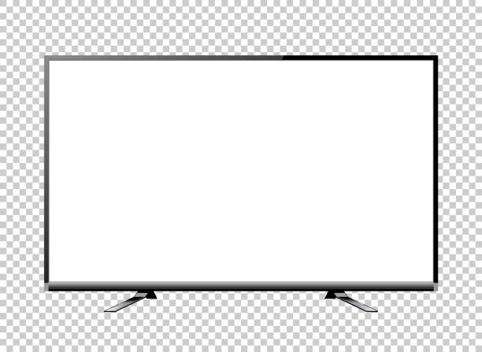

Return
Vessel
Void
Action
Return
Vessel
Void
Action
Elegar has scuttled back across the bridge from work. He is centered in an efficiency apartment. His windows point back towards his office. He sits with a calico kitten.
———————————————————————————————————————————————
A large glass of water sweats on the table. A small puddle at its base. Most would say that the efficiency apartment is aptly climate-controlled. The glass of water would disagree.
≃≃≃≃≃≃≃≃≃≃≃≃≃≃≃≃≃≃≃≃≃≃≃≃≃≃≃≃≃≃≃≃≃≃≃≃≃≃≃≃≃≃≃≃≃≃≃≃≃≃≃≃≃≃≃≃≃≃≃≃≃≃
The refrigerator gurgles and is silent. Inside, cool air creeps across a void on the middle shelf. Outside, Elegar takes another sip of water, replaces the glass on the table, takes 4 steps and disappears left around the corner.
≈≈≈≈≈≈≈≈≈≈≈≈≈≈≈≈≈≈≈≈≈≈≈≈≈≈≈≈≈≈≈≈≈≈≈≈≈≈≈≈≈≈≈≈≈≈≈≈≈≈≈≈≈≈≈≈≈≈≈≈≈≈≈≈≈≈≈≈≈≈≈≈≈≈≈≈≈≈≈≈≈≈≈≈≈
The kitten leaps upon the table.
⫙⫙⫙⫙⫙⫙⫙⫙⫙⫙⫙⫙⫙⫙⫙⫙⫙⫙⫙⫙⫙⫙⫙⫙⫙⫙⫙⫙⫙⫙⫙⫙⫙⫙⫙⫙⫙⫙⫙⫙⫙⫙⫙⫙⫙⫙⫙⫙⫙⫙⫙⫙⫙⫙⫙⫙⫙⫙⫙⫙⫙⫙⫙⫙⫙⫙⫙⫙⫙